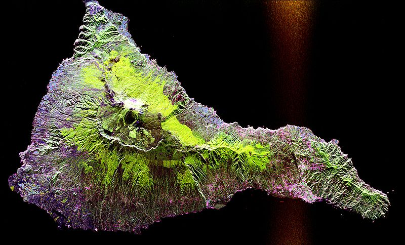
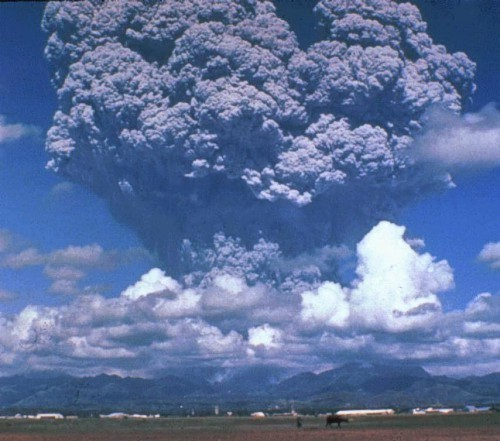

Lets learn About Nature
Article Title

SA volcano is a rupture on the crust of a planetary mass object, such as the Earth, which allows hot lava, volcanic ash, and gases to escape from a magma chamber below the surface.
Earth's volcanoes occur because the planet's crust is broken into 17 major, rigid tectonic plates that float on a hotter, softer layer in the Earth's mantle. Therefore, on Earth, volcanoes are generally found where tectonic plates are diverging or converging. For example, a mid-oceanic ridge, such as the Mid-Atlantic Ridge, has volcanoes caused by divergent tectonic plates pulling apart
the Pacific Ring of Fire has volcanoes caused by convergent tectonic plates coming together. Volcanoes can also form where there is stretching and thinning of the crust's interior plates, e.g., in the East African Rift and the Wells Gray-Clearwater volcanic field and Rio Grande Rift in North America. This type of volcanism falls under the umbrella of "plate hypothesis" volcanism. Volcanism away from plate boundaries has also been explained as mantle plumes. These so-called "hotspots", for example Hawaii, are postulated to arise from upwelling diapirs with magma from the core–mantle boundary, 3,000 km deep in the Earth. Volcanoes are usually not created where two tectonic plates slide past one another
Earth's volcanoes occur because the planet's crust is broken into 17 major, rigid tectonic plates that float on a hotter, softer layer in the Earth's mantle. Therefore, on Earth, volcanoes are generally found where tectonic plates are diverging or converging. For example, a mid-oceanic ridge, such as the Mid-Atlantic Ridge, has volcanoes caused by divergent tectonic plates pulling apart
Sidebar 2
- List Item 1
- List Item 2
- List Item 3
- List Item 4
- List Item 5
- List Item 6
- List Item 7

In addition to telephony, modern mobile phones also support a wide variety of other services such as text messaging, MMS, email, Internet access, short-range wireless communications (infrared, Bluetooth), business applications, gaming, and photography. Mobile phones that offer these and more general computing capabilities are referred to as smartphones.